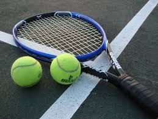

Тенісний корт

Теніс - вид спорту, у якому грають двоє гравців один проти одного, або дві команди по два гравці в кожній, команда проти команди, на майданчику — корті, поділеному навпіл поперечною сіткою.
У відео знизу розповідається про те як освоїти базові навички гри в теніс